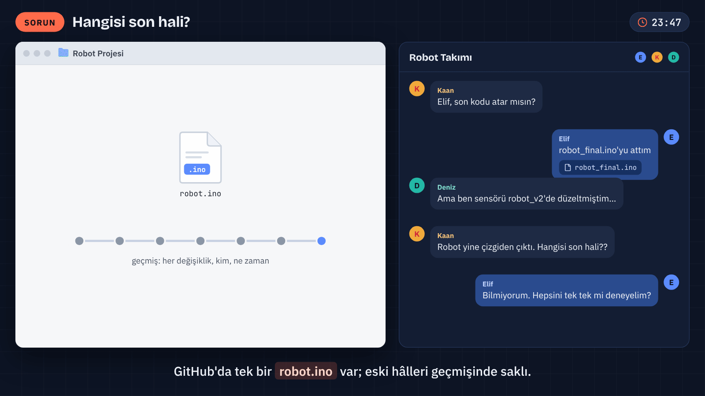
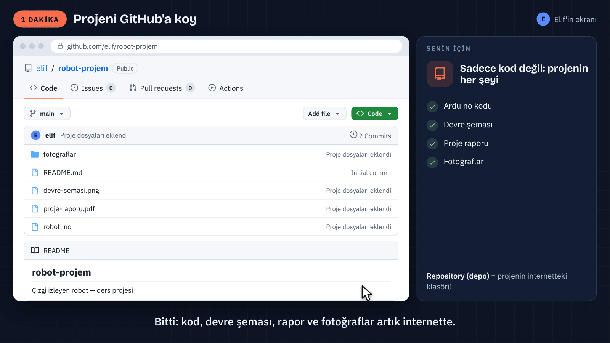
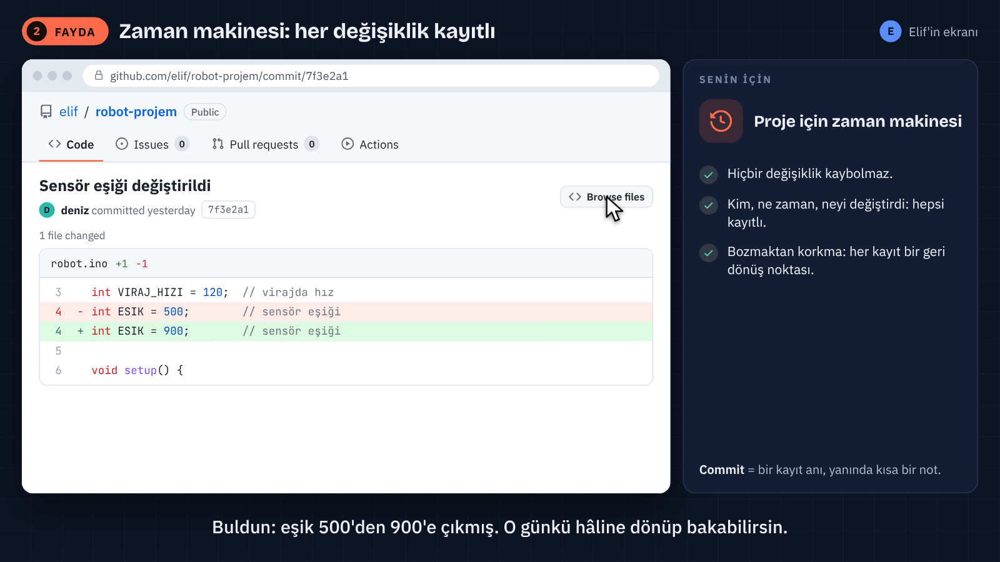
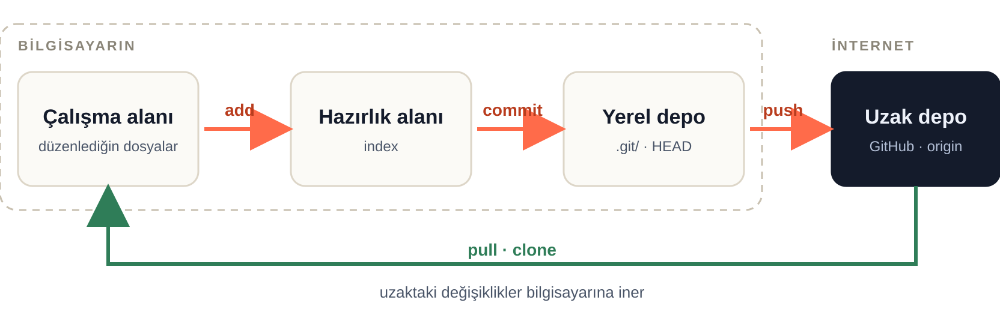
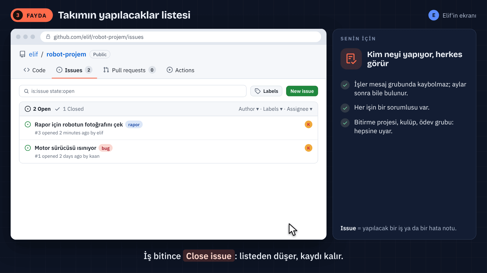
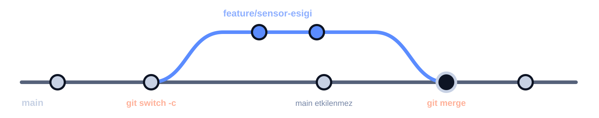

Projenin geçmişini tut, takımınla çalış, emeğini görünür kıl.
MEKATRONİK · 45 DAKİKA
Git ve GitHub
DERSİN AKIŞI
45 dakikalık rota
Bir robot projesi, dört durak.
- Temeller: dosya, depo ve geçmiş · 9 dk 15 sn
- Değişiklik: bilgisayardan GitHub'a · 12 dk 45 sn
- Takım: issue, dal ve inceleme · 12 dk
- Paylaşım, kaynaklar ve sorular · 11 dk
32 ana slayt · 12 başvuru slaytı · Tek proje üzerinden anlatım
01 · TEMELLER
Son dosya hangisi?
robot_final_SON.ino dosyası gerçekten son sürüm mü?

Dosya adlarına sürüm yazmak yerine, değişikliklerin geçmişini tutarız.
01 · TEMELLER
Git ve GitHub
Git geçmişi tutar. GitHub bu geçmiş etrafında birlikte çalışmayı sağlar.
Git · bilgisayarındaki araç
Commit'leri, dalları ve yerel geçmişi yönetir. Birçok işlem internet olmadan çalışır.
GitHub · ortak platform
Depoyu barındırır; issue, pull request ve inceleme araçlarını bir araya getirir.
Git aynı zamanda GitLab ve diğer Git sunucularıyla da kullanılabilir.
01 · TEMELLER
Depo dosya ve geçmiştir
Kod, devre şeması, rapor ve açıklama aynı projenin parçalarıdır.

Repository = depo · robot.ino + README.md + devre şeması + kayıtlı geçmiş
01 · TEMELLER
Commit bir kayıt noktası
“IR sensör eşiği artırıldı” bir değişikliği ve amacını anlatır.
- Projenin seçilmiş hâlini geçmişe kaydeder.
- Bir kimliği, yazarı ve açıklama mesajı vardır.
- Bilgisayarda commit etmek, GitHub'a göndermekten ayrıdır.
Kaydetmek ≠ commit etmek ≠ push etmek
01 · TEMELLER
README giriş kapısıdır
Projeyi açan biri neye baktığını birkaç cümlede anlayabilmeli.
# Robot Projem
IR sensörlerle çizgi izleyen Arduino robotu.
## Donanım
Arduino, IR sensörler, motor sürücü ve motorlar.
## Çalıştırma
Bağlantı şemasını ve robot.ino açıklamalarını izleyin.Amaç · donanım · kurulum · fotoğraf veya şema
01 · TEMELLER
Kim görebilir?
Görünürlük ve yazma izni ayrı kararlardır.
Public · herkese açık
Herkes görebilir ve klonlayabilir. Ana depoya yazmak ayrıca izin gerektirir.
Private · özel
Erişimi yetkili kişilerle sınırlıdır. Takım üyelerine uygun izin verilir.
Parolalar, erişim anahtarları ve kişisel veriler proje dosyası değildir.
02 · DEĞİŞİKLİĞİN YOLU
Dün çalışıyordu
Geçmiş, “Ne değişti?” sorusuna somut bir cevap verir.

Kim, ne zaman, hangi kayıtla? · Geçmiş yalnız commit edilen değişiklikleri kapsar.
02 · DEĞİŞİKLİĞİN YOLU
Satır farkı nasıl okunur?
Diff, iki hâl arasındaki değişikliği gösterir.
robot.ino
- const int ESIK = 500;
+ const int ESIK = 900;− önceki satır · + yeni satır · ESIK: IR sensör okuması için örnek eşik
02 · DEĞİŞİKLİĞİN YOLU
Değişiklik dört yerde durur
Düzenle → hazırla → kaydet → paylaş

Add hazırlar. Commit yerelde kaydeder. Push gönderir. Pull uzaktaki yenilikleri alır.
02 · DEĞİŞİKLİĞİN YOLU
Clone ile yerel kopya
Var olan depoyu dosyaları ve geçmişiyle bilgisayara alırız.
git clone <depo-adresi>
cd robot-projemPublic depo HTTPS ile okunabilir; private depoda erişim gerekir. ZIP indirmek Git geçmişini getirmez.
02 · DEĞİŞİKLİĞİN YOLU
Önce dosyayı değiştiririz
README'ye çizgi sensörlerinin görevini ekledik ve dosyayı kaydettik.
README.md
## Sensörler
IR sensörler çizgiyi algılamak için kullanılır.
Bağlantılar devre-semasi.png dosyasındadır.
# Dosyayı kaydet → ardından:
git statusDüzenleme adımı olmadan add ve commit yeni bir değişiklik üretmez.
02 · DEĞİŞİKLİĞİN YOLU
Add ile değişikliği seçeriz
Bir commit'in kapsamını bilinçli belirleriz.
git add README.md
git diff --cachedAdd, dosyanın o andaki hâlini hazırlar. Sonraki düzenleme için yeniden add gerekebilir.
02 · DEĞİŞİKLİĞİN YOLU
Commit ile yerelde kaydederiz
Mesaj, değişikliğin ne işe yaradığını anlatır.
git commit -m "IR sensör bağlantıları README'de açıklandı"
git log --onelineBu kayıt bilgisayardadır. GitHub'a aktarım bir sonraki adımdır.
02 · DEĞİŞİKLİĞİN YOLU
Push ile GitHub'a göndeririz
Yerel kayıtlar, push sonrasında uzak depoda görünür.
git pushYazma izni ve kimlik doğrulama gerekir. GitHub hesap parolası, Git için HTTPS parolası değildir.
02 · DEĞİŞİKLİĞİN YOLU
Pull ile yenilikleri alırız
Takımın ortak geçmişi ile yerel kopya yeniden buluşur.
git status
git pull --ff-onlyÖrnek, yerel dalda ayrı commit yoksa ilerler. Geçmişler ayrılmışsa birleştirme yöntemi seçilir.
03 · TAKIM ÇALIŞMASI
Issue işi görünür kılar
“IR sensör eşiğini incele” ortak bir iş kaydıdır.

Başlık + gözlenen durum + beklenen sonuç + sorumlu
03 · TAKIM ÇALIŞMASI
Dal ayrı bir çalışma çizgisidir
Aynı başlangıçtan farklı değişiklikler ilerleyebilir.

Branch, bütün dosyaların fiziksel kopyası değil, bir commit'e işaret eden addır.
03 · TAKIM ÇALIŞMASI
Başlangıç için sade dal düzeni
Dal düzenini projenin ihtiyacı belirler.
Ana çizgi
main · takımın kabul ettiği güncel çalışma.
İş dalları
feature/sensor-esigi · belirli değişiklik, inceleme, birleştirme.
dev veya staging her proje için zorunlu değildir. Hedef dal CONTRIBUTING kılavuzundan öğrenilir.
03 · TAKIM ÇALIŞMASI
Pull request bir öneridir
“Bu dalın değişikliğini main'e alalım mı?”
Kaynak: feature/sensor-esigi → Hedef: main
Başlık: IR sensör eşiğini artır
Neden: Robot bazı koşullarda çizgiyi kaybediyordu.
Değişiklik: ESIK, 500 → 900.
Doğrulama: Yapılan gözlem ve test burada belirtilir.PR açıklaması neyin, neden değiştiğini ve nasıl doğrulandığını anlatır.
03 · TAKIM ÇALIŞMASI
İnceleme çözümü güçlendirir
Bir sayı değişikliği küçük görünür; robotun davranışını etkileyebilir.
- Files changed: değişen satırlar ve bağlam.
- Yorum: “Bu eşik hangi koşulda denendi?”
- Yeni commit aynı dala gönderilince PR güncellenir.
- Onay ve gerekli kontroller sonrası birleştirme.
İnceleme, kararın ve gerekçesinin projede kalmasını sağlar.
03 · TAKIM ÇALIŞMASI
Birleştirme sonrası herkes günceller
GitHub'da kabul edilen değişiklik, yerel main'e ayrıca alınır.
git switch main
git pull --ff-only- PR, main'e birleştirilir.
- Yerelde main dalına geçilir.
- Uzak değişiklikler alınır.
- Birleşmiş iş dalı gerekirse temizlenir.
Dal silmeden önce değişikliğin hedef dalda bulunduğu doğrulanır.
03 · TAKIM ÇALIŞMASI
Çakışma kararı bize bırakır
İki dal aynı satırı farklı biçimde değiştirmiş.
robot.ino
<<<<<<< HEAD
const int ESIK = 900;
=======
const int ESIK = 700;
>>>>>>> mainHEAD: şu anki dal · main: birleştirdiğimiz dal · ESIK: IR sensör okuma eşiği
03 · TAKIM ÇALIŞMASI
Çakışmayı anlamıyla çözeriz
Önce doğru davranışa karar verilir, ardından işaretler temizlenir.
git add robot.ino
git commit -m "IR sensör eşik çakışması çözüldü"- İki değişikliğin gerekçesini ve bağlamını oku.
- Proje için uygun çözümü seç veya yeni çözüm yaz.
- İşaretleri kaldır, dosyayı kaydet ve doğrula.
- Dosyayı add ile hazırla, merge commit'ini tamamla.
Örnek bir merge çözümüdür; devam komutu yapılan işleme göre değişir.
04 · PAYLAŞIM VE GÖRÜNÜRLÜK
Hazır kodu nasıl seçeriz?
Robota HC-SR04 mesafe sensörü eklerken ilk sonuç tek başına yeterli değildir.
- Donanım ve kullanılan yazılım sürümüyle uyum.
- README, bağlantı açıklaması ve çalışan örnekler.
- Bakım durumu, açık sorunlar ve yayınlar.
- Lisans ve projenin kullanım koşulları.
Yıldız, ilgi ve kaydetme işaretidir; kalite veya kullanım garantisi değildir.
04 · PAYLAŞIM VE GÖRÜNÜRLÜK
Lisans kullanım şartlarını anlatır
Bir kodu görebilmek, onu her amaçla kullanabilmek anlamına gelmez.
- LICENSE dosyasını ve bağımlılıkların lisanslarını oku.
- Kopyalama, dağıtma ve değişiklik koşullarını öğren.
- Gerekli atıf ve lisans bildirimlerini koru.
Açık kaynak kullanırken teknik uygunluk ve kullanım izni birlikte değerlendirilir.
04 · PAYLAŞIM VE GÖRÜNÜRLÜK
Fork ile dış projeye katkı
Kendi kopyanda çalış, asıl projeye değişiklik öner.
- Katkı kılavuzunu oku ve hedef dalı öğren.
- Depoyu hesabına fork et; kendi fork'unu klonla.
- İş dalında değiştir, commit et ve fork'una gönder.
- Asıl projeye doğru hedef dalı seçerek PR aç.
Public depoyu doğrudan klonlamak mümkündür; fork, kendi uzak kopyanda çalışmanı sağlar.
04 · PAYLAŞIM VE GÖRÜNÜRLÜK
Portfolyo projeyi anlaşılır kılar
İyi açıklanan birkaç proje, katkı sayısından daha çok şey anlatabilir.
Projede göster
Amaç, senin katkın, kullanılan donanım, sonuçlar ve çalışma sınırları.
Profilde düzenle
Öne çıkan depolar, açık README'ler ve doğru çalışan proje bağlantıları.
Katkı grafiği GitHub'ın saydığı etkinlikleri gösterir; bütün çalışma günlerini veya emeği ölçmez.
04 · PAYLAŞIM VE GÖRÜNÜRLÜK
Öğrenci kaynakları
GitHub Education, doğrulanmış öğrenciler için araç ve öğrenme imkânları sunar.
- Student Developer Pack: değişen iş ortağı teklifleri.
- Copilot Student: doğrulanmış öğrenciler için ücretsiz erişim.
- Başvuru: öğrenci durumu ve gerekli belgelerle doğrulama.
Güncel şartlar ve teklifler: education.github.com/pack
ÖZET
Bir projenin bütün akışı
Sorun → issue → dal → değişiklik → commit → push → PR → inceleme → merge → pull
- Git kaydeder; GitHub ortak çalışmayı düzenler.
- Kaydet, commit ve push farklı adımlardır.
- README projeyi, issue işi, PR çözümü açıklar.
Kaynaklar: GitHub Docs · Pro Git · GitHub Skills
KAPANIŞ
Sorular
Değişiklik nerede? Kim görebiliyor? Takıma nasıl ulaşıyor?
Git · GitHub · repository · commit · branch · issue · pull request
EK 01 · BAŞVURU
Git kurulumu
İşletim sistemine uygun resmî kurulum yolunu seç.
git --versionWindows
Git for Windows; Git Bash veya uygun terminal.
macOS ve Linux
İşletim sistemine uygun paket veya kurulum yöntemi.
Sürüm numarası sisteme göre değişir. Güncel kurulum: git-scm.com/install
EK 02 · BAŞVURU
Commit kimliği
Kayıtlarda görünen ad ve e-posta önceden ayarlanır.
git config --global user.name "Elif Örnek"
git config --global user.email "elif@example.com"
git config --global init.defaultBranch mainAd ve e-posta örnektir. Bu ayar GitHub'da kimlik doğrulama yapmaz.
EK 03 · BAŞVURU
Editör ve terminal
Aynı Git işlemi terminalde veya grafik arayüzde yapılabilir.
Terminal
Komut ve seçenekleri açıkça görürsün; işlem adımları kolayca paylaşılır.
VS Code
Dosyalar, fark görünümü, Source Control ve entegre terminal aynı pencerededir.
Open Folder ile proje açılır; View → Terminal ile terminal görünür.
EK 04 · BAŞVURU
.git ve .gitignore
Geçmişin veritabanı ile izleme tercihleri farklı dosyalarda durur.
robot-projem/
.git/
.gitignore
README.md
robot.ino
# .gitignore örneği
build/
.env.git elle düzenlenmez. .gitignore, zaten izlenen dosyaları geçmişten silmez.
EK 05 · BAŞVURU
SSH anahtar çifti
GitHub'a açık anahtar eklenir; özel anahtar kişide kalır.
ssh-keygen -t ed25519 -C "elif@example.com"
# GitHub'a eklenecek dosya:
~/.ssh/id_ed25519.pub
# Paylaşılmayacak özel anahtar:
~/.ssh/id_ed25519Anahtar için parola kullanımı koruma sağlar. Mevcut anahtarın üzerine yazılmaz.
EK 06 · BAŞVURU
SSH ajanı ve bağlantı
Ajanın kurulumu işletim sistemine göre değişir.
# Bash / Git Bash örneği
eval "$(ssh-agent -s)"
ssh-add ~/.ssh/id_ed25519
# GitHub bağlantısını kontrol et
ssh -T git@github.commacOS Keychain ve Windows OpenSSH adımları farklı olabilir; resmî yönerge izlenir.
EK 07 · BAŞVURU
Yerel klasörden depoya
Bu örnek, GitHub'da boş bir uzak depo varsayar.
cd robot-projem
git init -b main
git add README.md robot.ino
git commit -m "Robot projesinin ilk kaydı"
git remote add origin <depo-adresi>
git remote -vREADME.md ve robot.ino önceden vardır. Uzak depoda başlangıç commit'i varsa clone daha sade olabilir.
EK 08 · BAŞVURU
İlk gönderim ve izleme
-u, yerel dalın hangi uzak dalı izleyeceğini kaydeder.
git push -u origin main
# İzleme bağlantısı kurulduktan sonra:
git push
git pull --ff-onlyDal adını git branch ile kontrol et. Komutta projenin gerçek dal adı kullanılır.
EK 09 · BAŞVURU
Dal ve fark komutları
Karşılaştırmada başlangıç ve sonuç tarafı açık yazılır.
git branch
git switch -c feature/sensor-esigi
# İki dalın son hâli: main → feature
git diff main feature/sensor-esigi -- robot.ino
# Ortak başlangıçtan feature dalındaki değişiklik:
git diff main...feature/sensor-esigiTab tamamlama kabuk ayarına bağlıdır; yazılan önek dal adının başlangıcı olmalıdır.
EK 10 · BAŞVURU
Geri alırken niyeti seç
Dosya, hazırlık alanı ve geçmiş için farklı işlemler vardır.
Hazırlıktan çıkar
git restore --staged README.md Çalışma dosyasındaki değişiklik korunur.
Paylaşılan değişikliği tersine çevir
git revert <commit> Önceki etkiyi geri alan yeni commit oluşturur.
git reset HEAD~1, dalı önceki commit'e taşır; varsayılan mixed çalışma dosyalarını korur.
EK 11 · BAŞVURU
Hard reset ve kurtarma sınırları
Commit edilmemiş çalışma, hard reset ile kaybolabilir.
# Yalnız etkileri değerlendirilmişse:
git reset --hard <commit>
# Yerel işaretçi hareketlerini incele:
git reflogReflog bazı eski commit'leri bulmaya yardımcı olur; kaydedilmemiş bütün işi kurtarma garantisi vermez.
EK 12 · BAŞVURU
Komutlara kısa bakış
Komutlar, ana dersteki kavramların kısa karşılığıdır.
git clone <depo-adresi>
# Dosyayı düzenle ve kaydet
git status
git add <dosya>
git commit -m "Ne ve neden değişti?"
git push
# Takımın yeniliklerini al
git pull --ff-only
# İş dalı oluştur
git switch -c feature/<is>Yer tutucular gerçek değerlerle değiştirilir. Kurulum, kimlik ve izinler önce sağlanır.